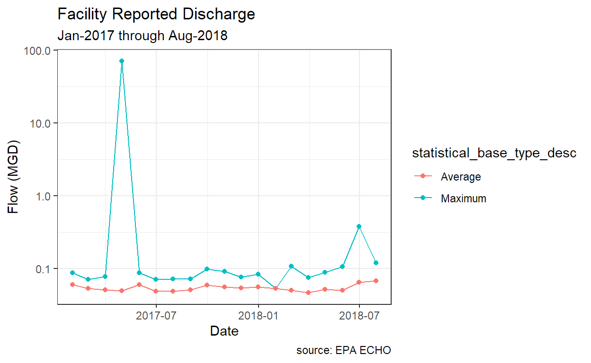
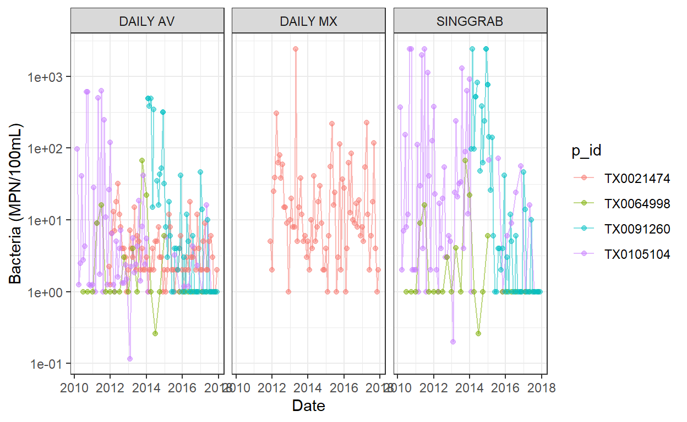
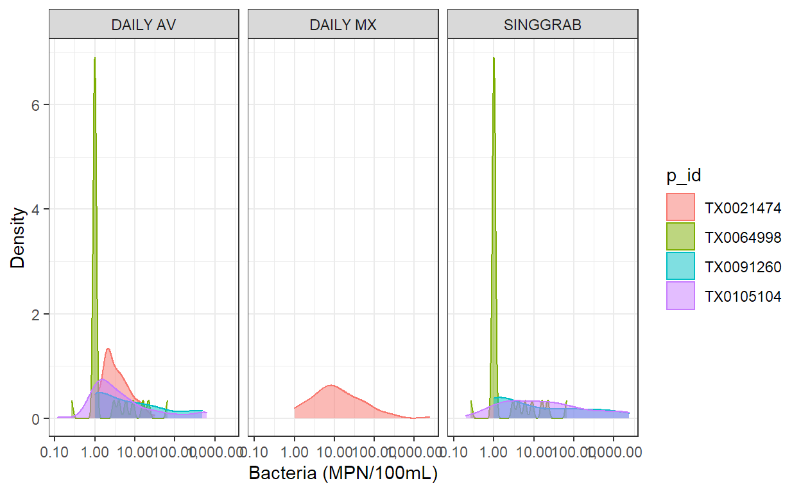

Download EPA data with R
The U.S. Environmental Protection Agency (EPA) provides access to facility and compliance information for registered permit holders under the Clean Air Act, Clean Water Act. The primary way for non-governmental entities to obtain this data is through the EPA Environmental and Compliance History Online (ECHO) website. Data is housed under “media-specific” programs. Relevant to this post, the National Pollutant Discharge Elimination Systems (NPDES) maintains data on pollutant discharges to waterways and the Air Facility Service (AFS) maintain data on emission to air. Gibbs (Gibbs and Simpson 2009) assess the strengths and weakness of the data collated by ECHO and provide an example of assessing environmental crime rates. While a discussion about the merits of EPA’s environmental data collection efforts and methodology are warranted, this post will discuss a new package that provides API access to the ECHO database.
I primarily use ECHO to obtain discharge monitoring records for wastewater and industrial discharges. Until recently, my workflow was to call or email the state environmental agency and ask for all the available permit numbers in the watershed. Some states maintain and provide a GIS file with spatial locations (this was preferred, but finding out when that file was last updated was can be difficult). Once I obtained the permit numbers, I log onto ECHO and type the permits numbers in, and individually retrieve discharge records for each facility. This requires quite a bit of clicking and typing, and is prone to error. Furthermore, there is no way to verify the records I received are correct. If I mistyped a number or received a wrong record from the agency, I have little way of catching the error.
Thankfully, ECHO provides web access through “GET” and REST services to provide some level of automated and reproducible data access. I recently wrote the echor package to provide access to these service in R. This was my first attempt at developing an R package and my first attempt at utilizing data APIs in a programatic way.
echor provides functions to search for and obtain facility data under the NPDES, AFS, and Safe Drinking Water (SDW) program areas. Functions are also available to retrieve facility specific pollutant discharge data under the NPDES and AFS programs. Under the NPDES program, pollutant discharge reporting intervals are specific to the permit, so you may get records on quarterly, monthly, or perhaps daily basis. Records under the AFS program are returned as annual emissions.
If you have a facility permit number, downloading the discharge records is pretty simple. I made every attempt to return records in “tidy” long format to make plotting and further analysis easy. If you haven’t already, install echor from CRAN.
echoGetEffluent() will return the facility reported discharges. Arguments are available to specify the permit number, date range, and parameter code (the pollutant of interest). A function is also provided to search for parameter codes: echoWaterGetParams(). In the following example I want to identify the parameter code for daily flow, then get the reported discharge for a facility that I already have a permit number for.
# A tibble: 2 x 2
ValueCode ValueDescription
<chr> <chr>
1 51725 Flow, in conduit or thru treatment plant
2 50050 Flow, in conduit or thru treatment plantHere, I get two parameter codes. I happen to know I want to use parameter code 50050. Searching for the right terminology and correct code can be difficult and might require some trial and error.
The next step is to obtain the discharge records:
Rows: 38
Columns: 61
$ activity_id <chr> "3600178396", "3600178396", "...
$ npdes_id <chr> "TX0119407", "TX0119407", "TX...
$ version_nmbr <chr> "4", "4", "4", "4", "4", "4",...
$ perm_feature_id <chr> "3600049681", "3600049681", "...
$ perm_feature_nmbr <chr> "001", "001", "001", "001", "...
$ perm_feature_type_code <chr> "EXO", "EXO", "EXO", "EXO", "...
$ perm_feature_type_desc <chr> "External Outfall", "External...
$ limit_set_id <chr> "3600061722", "3600061722", "...
$ limit_set_schedule_id <chr> "3600073706", "3600073706", "...
$ limit_id <chr> "3600437316", "3600437316", "...
$ limit_type_code <chr> "ENF", "ENF", "ENF", "ENF", "...
$ limit_begin_date <chr> "08/01/2015", "08/01/2015", "...
$ limit_end_date <chr> "03/01/2020", "03/01/2020", "...
$ nmbr_of_submission <chr> "1", "1", "1", "1", "1", "1",...
$ parameter_code <chr> "50050", "50050", "50050", "5...
$ parameter_desc <chr> "Flow, in conduit or thru tre...
$ monitoring_location_code <chr> "1", "1", "1", "1", "1", "1",...
$ monitoring_location_desc <chr> "Effluent Gross", "Effluent G...
$ stay_type_code <chr> "", "", "", "", "", "", "", "...
$ stay_type_desc <chr> "", "", "", "", "", "", "", "...
$ limit_value_id <chr> "3600678122", "3600678123", "...
$ limit_value_type_code <chr> "Q2", "Q1", "Q2", "Q1", "Q2",...
$ limit_value_type_desc <chr> "Quantity2", "Quantity1", "Qu...
$ limit_value_nmbr <chr> "", ".131", "", ".131", "", "...
$ limit_unit_code <chr> "03", "03", "03", "03", "03",...
$ limit_unit_desc <chr> "MGD", "MGD", "MGD", "MGD", "...
$ standard_unit_code <chr> "03", "03", "03", "03", "03",...
$ standard_unit_desc <chr> "MGD", "MGD", "MGD", "MGD", "...
$ limit_value_standard_units <chr> "", ".131", "", ".131", "", "...
$ statistical_base_code <chr> "DD", "DB", "DD", "DB", "DD",...
$ statistical_base_short_desc <chr> "DAILY MX", "DAILY AV", "DAIL...
$ statistical_base_type_code <chr> "MAX", "AVG", "MAX", "AVG", "...
$ statistical_base_type_desc <chr> "Maximum", "Average", "Maximu...
$ limit_value_qualifier_code <chr> "", "<=", "", "<=", "", "<=",...
$ stay_value_nmbr <chr> "", "", "", "", "", "", "", "...
$ dmr_event_id <chr> "3600838828", "3600838828", "...
$ monitoring_period_end_date <chr> "01/31/2017", "01/31/2017", "...
$ dmr_form_value_id <chr> "3610877673", "3610877668", "...
$ value_type_code <chr> "Q2", "Q1", "Q2", "Q1", "Q2",...
$ value_type_desc <chr> "Quantity2", "Quantity1", "Qu...
$ dmr_value_id <chr> "3634771542", "3634771541", "...
$ dmr_value_nmbr <chr> ".0878", ".0603", ".0709", "....
$ dmr_unit_code <chr> "03", "03", "03", "03", "03",...
$ dmr_unit_desc <chr> "MGD", "MGD", "MGD", "MGD", "...
$ dmr_value_standard_units <chr> ".0878", ".0603", ".0709", "....
$ dmr_value_qualifier_code <chr> "=", "=", "=", "=", "=", "=",...
$ value_received_date <chr> "02/16/2017", "02/16/2017", "...
$ days_late <chr> "", "", "", "", "", "", "", "...
$ nodi_code <chr> "", "", "", "", "", "", "", "...
$ nodi_desc <chr> "", "", "", "", "", "", "", "...
$ exceedence_pct <chr> "", "", "", "", "", "", "", "...
$ npdes_violation_id <chr> "", "", "", "", "", "", "", "...
$ violation_code <chr> "", "", "", "", "", "", "", "...
$ violation_desc <chr> "", "", "", "", "", "", "", "...
$ rnc_detection_code <chr> "", "", "", "", "", "", "", "...
$ rnc_detection_desc <chr> "", "", "", "", "", "", "", "...
$ rnc_detection_date <chr> "", "", "", "", "", "", "", "...
$ rnc_resolution_code <chr> "", "", "", "", "", "", "", "...
$ rnc_resolution_desc <chr> "", "", "", "", "", "", "", "...
$ rnc_resolution_date <chr> "", "", "", "", "", "", "", "...
$ violation_severity <chr> "No Violation Identified", "N...The returned data_frame includes a row for each reporting period from the facility and a row for each statistical type (daily average and daily max in this case). Please note, that if you include the available start_date and end_date arguments in the function, they must be entered as "mm/dd/yyyy".
Use dplyr to do some data tidying and ggplot2 to make a quick plot of this data:

Searching ECHO for for permit holders by location or facility characterisitics is really valuable, albeit potentially verbose. The functions available for facility search have a long list of available search arguments. Here I will demonstrate a search by hydrologic unit code, a useful search area for those in hydrology.
Rows: 96
Columns: 26
$ CWPName <chr> "3280 FARM", "AES DRILLING FLUID...
$ SourceID <chr> "TXG130056", "TXR05CX83", "TXG11...
$ CWPStreet <chr> "1297 FM 3280", "27088 US 59 RD"...
$ CWPCity <chr> "PALACIOS", "EL CAMPO", "PALACIO...
$ CWPState <chr> "TX", "TX", "TX", "TX", "TX", "T...
$ CWPStateDistrict <chr> "14", "", "12", "14", "14", "12"...
$ CWPZip <chr> "774651779", "77437-9753", "7746...
$ MasterExternalPermitNmbr <chr> "TXG130000", "TXR050000", "TXG11...
$ RegistryID <chr> "110045502639", "110070367509", ...
$ CWPCounty <chr> "Jackson", "", "Matagorda", "Cal...
$ CWPEPARegion <chr> "06", "06", "06", "06", "06", "0...
$ FacDerivedHuc <chr> "12100401", "12100401", "1210040...
$ FacLat <dbl> 28.69808, 29.17455, 28.72175, 28...
$ FacLong <dbl> -96.32411, -96.29908, -96.21038,...
$ CWPTotalDesignFlowNmbr <dbl> NA, NA, NA, 92.320, NA, NA, NA, ...
$ CWPActualAverageFlowNmbr <dbl> NA, NA, NA, 92.320, NA, NA, NA, ...
$ ReceivingMs4Name <chr> "", "", "", "", "", "", "", "", ...
$ AssociatedPollutant <chr> "", "", "", "", "", "", "", "", ...
$ MsgpPermitType <chr> "", "", "", "", "", "", "", "", ...
$ CWPPermitStatusDesc <chr> "Terminated", "Effective", "Effe...
$ CWPPermitTypeDesc <chr> "General Permit Covered Facility...
$ CWPIssueDate <date> 2012-03-13, 2016-10-25, 2017-03...
$ CWPEffectiveDate <date> 2012-04-01, 2016-11-01, 2017-04...
$ CWPExpirationDate <date> 2016-04-17, 2021-08-13, 2021-11...
$ CWPSNCStatusDate <date> 2020-03-31, 2020-03-31, 2020-03...
$ StateAuthGen <chr> "Y", "Y", "Y", "Y", "Y", "Y", "Y...I found 47 permits, some are terminated some active. By default, the facility search function return a data_frame with variables I deemed useful. However, ECHO provides a a whole host of possible variables (in my state, these are often unfortunately left blank). echoWaterGetParams() will return a dataframe with these variable names, description and ColumnID number. Use the qcolumn argument in the search function to specify what variables you would like returned. According to echoWaterGetParams() there are 299 possible return variables. Certain variables are always returned regardless of the qcolumns argument specified. If I want to find all the POTW (public wastewater treatment plants), I need to specify qcolumn 27, which I cfound using the echoWaterGetMeta() function.
Rows: 232
Columns: 6
$ ColumnName <chr> "CWP_NAME", "SOURCE_ID", "CWP_STREET", "CWP_C...
$ DataType <chr> "VARCHAR2", "VARCHAR2", "VARCHAR2", "VARCHAR2...
$ DataLength <chr> "200", "30", "200", "100", "2", "5", "10", "9...
$ ColumnID <chr> "1", "2", "3", "4", "5", "6", "7", "8", "9", ...
$ ObjectName <chr> "CWPName", "SourceID", "CWPStreet", "CWPCity"...
$ Description <chr> "Facility or permit holder name, as maintaine...
# A tibble: 96 x 6
CWPName SourceID FacDerivedHuc FacLat FacLong CWPFacilityType~
<chr> <chr> <chr> <dbl> <dbl> <chr>
1 3280 FARM TXG130056 12100401 28.7 -96.3 NON-POTW
2 AES DRILLI~ TXR05CX83 12100401 29.2 -96.3 NON-POTW
3 ALAMO CONC~ TXG110081 12100401 28.7 -96.2 NON-POTW
4 ALCOA POIN~ TX0004715 12100401 28.7 -96.6 NON-POTW
5 APEKS AQUA~ TXG130042 12100401 28.7 -96.4 NON-POTW
6 BLESSING TXG130053 12100401 28.9 -96.3 NON-POTW
7 BLESSING T~ TXR15693Q 12100401 28.7 -96.5 NON-POTW
8 BOCA CHICA~ TX0098248 12100401 28.7 -96.4 NON-POTW
9 BON L. CAM~ TX0030597 12100401 29.1 -96.2 NON-POTW
10 BOWERS SHR~ TX0112691 12100401 28.7 -96.2 NON-POTW
# ... with 86 more rowsI can use this data_frame and purrr::pmap to retrieve discharge information. I will look up bacteria concentrations this time.
Rows: 7
Columns: 2
$ p_id <chr> "TX0021474", "TX0023051", "TX0105104", "TX0064998", ...
$ dmr <list> [<spec_tbl_df[146 x 61]>, <spec_tbl_df[0 x 61]>, <s...Very quickly, we just found all the POTWs that discharge treated wastewater in the watershed of interest and pulled in their reported discharges. Now we can plot the data and call it a day.


I was able to quickly generate some time series and density plots without ever touching the ECHO online user interface. There is plenty more documentation at:
https://mps9506.github.io/echor/index.html
If you have suggestions or problems, please report it at:
https://github.com/mps9506/echor/issues
Gibbs, Carole, and Sally S. Simpson. 2009. “Measuring Corporate Environmental Crime Rates: Progress and Problems.” Crime, Law and Social Change 51 (1): 87–107. https://doi.org/10.1007/s10611-008-9145-1.
If you see mistakes or want to suggest changes, please create an issue on the source repository.
Text and figures are licensed under Creative Commons Attribution CC BY 4.0. Source code is available at https://github.com/mps9506/mschramm, unless otherwise noted. The figures that have been reused from other sources don't fall under this license and can be recognized by a note in their caption: "Figure from ...".
For attribution, please cite this work as
Schramm (2018, Sept. 24). @mpschramm: Introducing echor. Retrieved from https://michaelpaulschramm.com/posts/introducing_echor/
BibTeX citation
@misc{schramm2018introducing,
author = {Schramm, Michael},
title = {@mpschramm: Introducing echor},
url = {https://michaelpaulschramm.com/posts/introducing_echor/},
year = {2018}
}